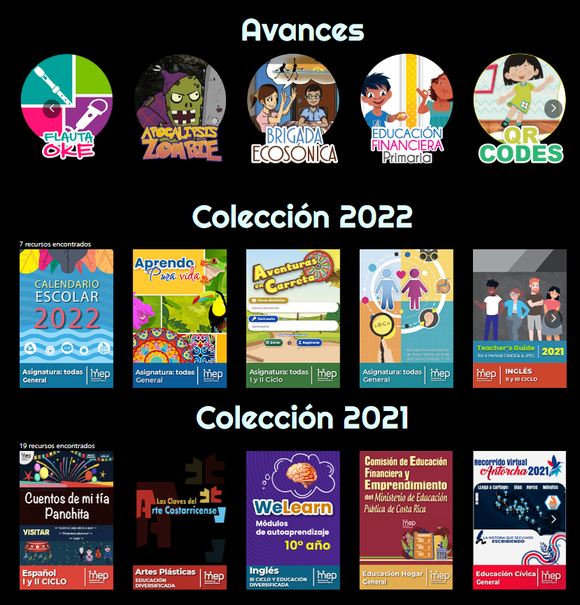

¿Qué ofrecemos desde GESPRO?
El departamento de Gestión y Producción de la Dirección de Recursos Tecnológicos del MEP, ofrece a los asesores de asignaturas dos opciones de desarrollos para los estudiantes, por un lado la elaboración de recursos digitales desde la idea conceptualizada del asesor de asignatura especialista en contenido, y por otro lado la plataforma Aprendo Pura Vida - Learning Passport, una herramienta para la creación de cursos dirigidos a estudiantes del sistema educativo costarricense
.png)
Producción de recursos
El equipo GESPRO cuenta con personas capacitadas para desarrollar recursos digitales, el único requisito es poder tener el acompañamiento de un asesor de materia especialista en el contenido, acorde a los programas de estudio vigentes.
Estos recursos son publicados en el portal Educ@tico, sin embargo debido a que existen otras dependencias que también envían recursos, se comparte nuestra colección de recursos GESPRO, con el fin mostrar una base de posibles desarrollos que se pueden realizar específicamente en nuestro departamento, esta colección enlaza el recurso desde el mismo sitio de Educ@tico.
Le invitamos a visitar este sitio y a explorar muchos otros recursos que se ofrecen en Educ@tico, el portal oficial del MEP.

https://recursos.mep.go.cr/2021/coleccion_gespro/
Plataforma Aprendo Pura Vida - Learning Passport
La plataforma Aprendo Pura Vida - Learning Passport es una herramienta para crear cursos dirigidos a estudiantes, esta plataforma ofrece una variedad de herramientas que permite diseñar de una forma sencilla un espacio para apoyar los distintos contenidos curriculares.

https://aprendo-pura-vida.learningpassport.org/#/
Para poder solicitar un espacio y crear un curso en Aprendo Pura Vida, existe como único requisito realizar un curso de forma asincrónica llamado: (AS) Creación de contenido - Aprendo Pura Vida LP, éste curso tiene una duración de aproximadamente 10 horas.
El objetivo de este curso es ofrecer las herramientas necesarias para manipular la plataforma y además conocer los elementos básicos para desarrollar los cursos. Una vez concluido éste curso, el objetivo inmediato es poder tener su participación en la creación de nuevos curso.